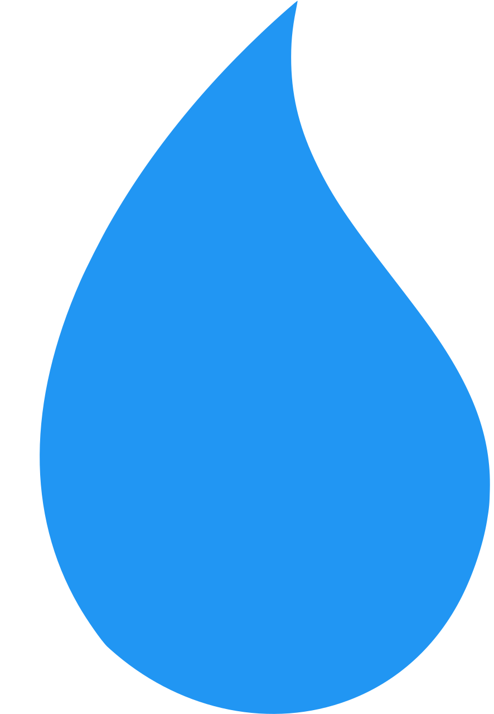

| Saturday 27/01 | Sunday 28/01 | Monday 29/01 | Tuesday 30/01 | Wednesday 31/01 | Thursday 01/02 | |
|---|---|---|---|---|---|---|
| WMO |  Cloudy |
Cloudy |
Cloudy |
Cloudy |
 Foggy |
Cloudy |
| Temperature | 5.9°C-17.0°C | 5.2°C-13.4°C | 10.1°C-13.6°C | 8.6°C-13.2°C | 4.9°C-16.4°C | 4.8°C-15.0°C |
| UV | 2.65 | 2.5 | 0.9 | 2.35 | 2.7 | 2.45 |
| Precipitations | 0.0mm  0% |
0.0mm 45% |
0.2mm 87% |
0.0mm 19% |
0.0mm 3% |
0.0mm 0% |
| Wind |
4.52km/h
|
7.38km/h
|
11.09km/h
|
5.25km/h
|
4.41km/h
|
6.38km/h
|
| Sunrise/Sunset | 08:06 - 17:47 | 08:05 - 17:49 | 08:04 - 17:50 | 08:03 - 17:51 | 08:02 - 17:53 | 08:01 - 17:54 |
LEARN MORE
Methodology
Welcome to our “Weather Forecast in Montpellier” website. You can find in the Home page two tables made using an HMTL function in the IPython.display module, you can see the source code here. We request the API URL with the desired parameters from the open-meteo website and extract the data to make a table that displays the information we are seeking. The second table displays, in order, the dates, the weather images and their descriptions, the minimal and maximal temperatures, the sums and hours of precipitation, the average winds and their dominant directions a,d the sunrises and sunsets hours.
Bonus
Here’s a table forecasting the 6 following days. However, the data doesn’t come form MeteoFrance but from the general “Weather Forecast” tab in the website. It’s an old table table made when we tried to bypass the 4-day forecast lenght that MétéoFrance limits us. Thay use slighty different parameters that are not available in the MétéoFrance API.